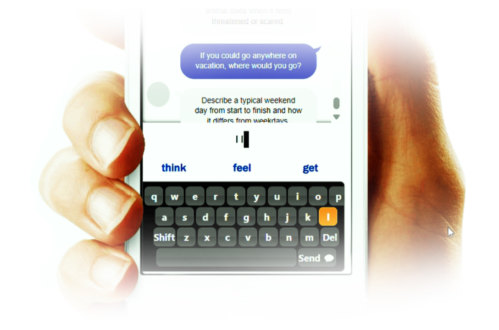
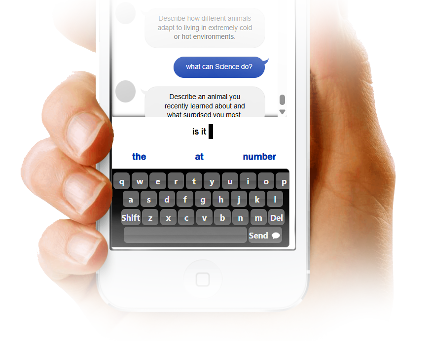
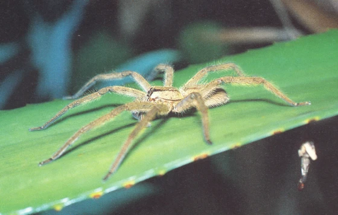
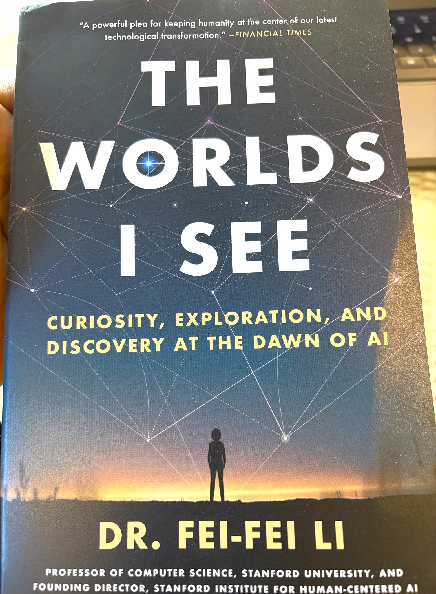

IntentSpider Webnet
面向文本张力与预测的流动语言网络。
阅读随笔
新颖、先进的下一词预测引擎

完全不使用自然语言处理即可实现个性化。它保留多样且相关的上下文候选，帮助人类回想，而不仅仅是选择。

IHCI 2026 演示文稿
我在诺丁汉大学主办的 2026 年国际人机交互会议（International Human Computer Interaction Conference 2026）上亲自进行了演示。您可以在下方下载演示文稿。
IntentSpider 使用 C++ 构建，并使用标准模板库。它采用了一种不同于 Google Gboard、Microsoft SwiftKey、Apple QuickType 和 Samsung Keyboard 所使用的 n-gram 模型的新颖方法。这是一个在设备端运行的引擎，其运行时快照没有网络数据流出或流入。 本系统不基于任何自然语言处理技术，也不基于任何类型的人工智能模型。其处理过程由图算法、动态规划、向量、集合、数组以及一般数据结构构建而成。这些算法历经数月的创建和开发，源于对理解这些极其复杂的交流模式和词语连接如何运作、如何操纵其他向量，以及如何改变其动态行为和属性的热情。IntentSpider 这个名字源于本研究早期对自然界的仔细观察。有关这方面的信息可在此处获取。（关于）


论文（论文）中也提到的第一个 IntentSpider 旧版（Legacy），是一个包含所有系统的 main.cpp 文件。后来，在学习了如何包含头文件以迁移代码和拆分代码文件之后，我创建了现在您在 Git 仓库中所看到的 IntentSpider 系统。仓库的源代码文件夹包含 C++ 文件和头文件。该文件夹还包含用于测试 IntentSpider 的数据集和文本文件，包括用于测试 IntentSpider Legacy 版本的古腾堡计划（Project Gutenberg）文本。这些文件在第 1 版中已不再使用。编译后的 intentspider.exe 文件也包含在内。
预测键盘是普通设备键盘中普遍存在且事实上已成为其组成部分的功能。即使是可穿戴技术也能够处理打字输入。但是，现有形式的预测输入存在一种潜在的后果。这不仅涉及预测或软件的质量，还涉及人类反复接收和使用这些预测可能产生的认知后果。使用预测键盘的人所接收的预测，是由一个集体预测模型从多个人类用户（或人类节点）中学习到的大量打字模式所塑造的。最终用户（人类）的打字行为具有其自身的独特性，而采用这种方法，我们是在让累积而来并经算法筛选的选择影响人的潜意识和敏感的决策过程；这些选择有时因为 GDPR 等隐私及数据保护要求限制了个人数据的处理方式而缺乏个性化，有时则经过匿名化处理，变得平淡或扁平化。*关于 Global Person 模式的说明
其中包含一个称为“Global Person”的集体人类用户，并建立了一个基于 Git 的云系统，所有开启 Global Person 模式的用户都可以实时向同一个共享状态作出贡献。我们为此使用了 Cloudflare KV 数据库。此外，该数据集用于插入大量文本数据，就如同这些数据来自多个这样的用户一样。此过程还使用了多个 Google Colab Tesla T4 GPU 执行。
请注意——这与 IntentSpider Engine 是分开的。IntentSpider Engine 本身在设备端、本地运行，并不依赖外部云来进行预测或更新图。 相反，这一过程可以定义为一种尝试：展示当意图图包含数量大得多的数据时，IntentSpider Engine 的信息处理能力和性能。
照片

Song（左）、Nex（中）和 Bryce（右）:)

演示

读书